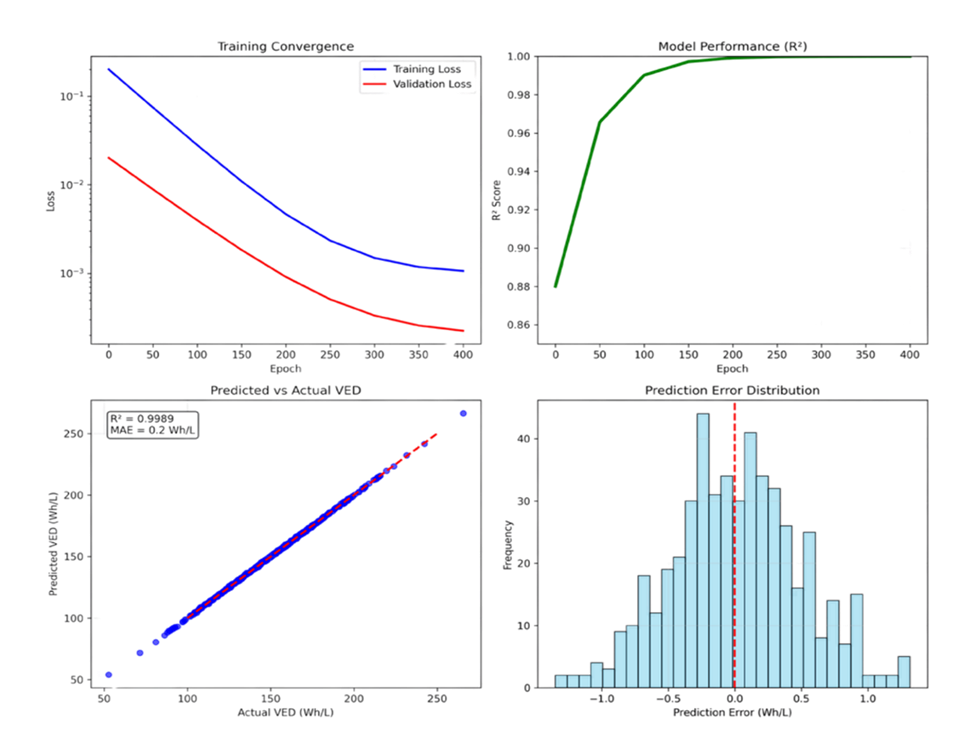

Physics-Informed Discovery of Battery Materials
Accelerating R&D timelines via Physics-Informed Neural Networks (PINNs).
The Challenge
Standard AI models often predict chemically unstable battery materials because they ignore real-world physics. Conversely, physical trial-and-error discovery is slow, often taking over a decade to bring a new material to market.
The Methodology
I developed a machine learning framework that embeds fundamental thermodynamic laws directly into the training process. This constrains the neural network to produce highly accurate, physically viable predictions.
- Physics-Based Features: Curated 29,377 compounds from the Materials Project using 22 distinct material descriptors.
- Physics-Informed Core: Constrained predictions using Volumetric Energy Density (VED) principles.
- Neural Network Prediction: Trained a Feed-Forward Neural Network to predict VED with high fidelity.
The Discovery
The framework achieved near-perfect predictive accuracy (R² of 0.9989). This allowed us to digitally screen 500,000 hypothetical compositions in under 15 minutes.

High-Performance Candidate
The high-throughput screening successfully identified a promising, high-energy candidate for chemical modification.
Novel Discovery:
Co-doped spinel: Co₀.₀₄Li₁.₀₅Ni₀.₅₄Mn₁.₅₁O₄.₀₅
Predicted VED: 238.2 Wh/L